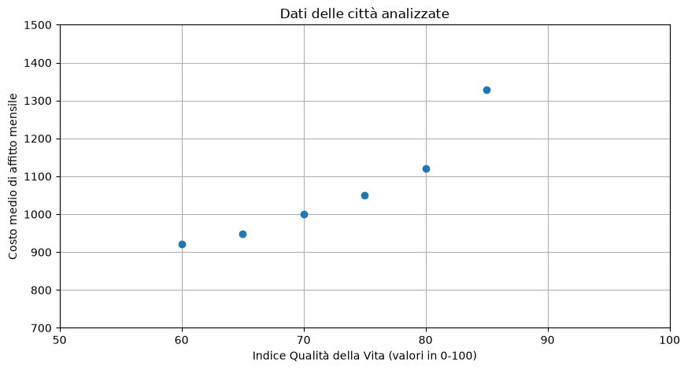
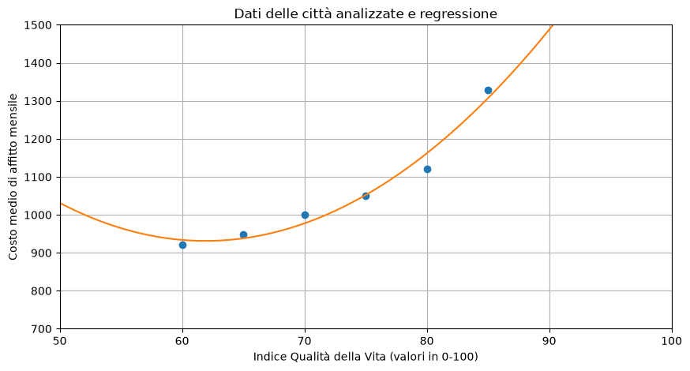
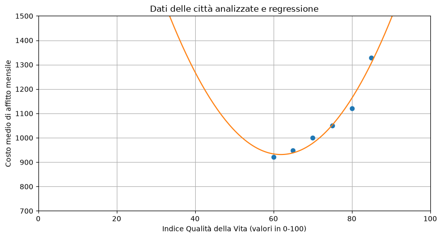

Esercizio 1) LS su dati sintetici#
Consegna:#
Considera le 6 coppie di dati \((x_i, y_i)\) che rappresentano 6 città in termini di:
x : Indice della Qualità della Vita, con valori fra 0 e 100;
y : Costo Medio di un affitto mensile, con valori non negativi.
i |
x |
y |
|---|---|---|
1 |
60 |
921.82 |
2 |
65 |
947.36 |
3 |
70 |
999.86 |
4 |
75 |
1050.30 |
5 |
80 |
1121.71 |
6 |
85 |
1329.49 |
Calcola il modello di regressione (lineare semplice o polinomiale) che meglio descrive i dati forniti. In particolare:
visualizza i punti con lo scatterplot;
fissa il grado del modello lineare e costruisci la matrice di Vandermonde opportuna;
risolvi la regressione tramite i minimi quadrati implementati da
np.linalg.lstsq, provando modelli di grado 0, 1, 2 e 3;visualizza il polinomio di regressione ottenuto;
analizza e confronta i residui al variare del grado di approssimazione;
osserva la capacità di generalizzazione dei modelli ottenuti, sull’intero dominio \( x \in [0, 100]\);
guarda quanto cambiano i risultati (valori di beta ottimali e predizioni) risolvendo il problema dei minimi quadrati con Cholesky (funzione
np.linalg.cholesky)guarda quanto cambiano i risultati (valori di beta ottimali e predizioni) risolvendo il problema dei minimi quadrati con la SVD e la sua specifica riformulazione con la pseudoinversa di Moore–Penrose.
import numpy as np
import matplotlib.pyplot as plt
Lettura dei dati#
x = (60, 65, 70, 75, 80, 85)
y = (921.82, 947.36, 999.86, 1050.3, 1121.71, 1329.49)
x = np.array( x )
y = np.array( y )
plt.figure(figsize=(10, 5))
plt.plot(x, y, 'o')
plt.title('Dati delle città analizzate')
plt.xlabel('Indice Qualità della Vita (valori in 0-100)')
plt.ylabel('Costo medio di affitto mensile')
plt.xlim([50, 100])
plt.ylim([700, 1500])
plt.grid()
plt.show()

Creazione della matrice e del sistema lineare#
# Grado del polinomio
grado = 2
# Matrice del modello
m = len(x)
A = np.zeros((m, grado + 1))
for j in range(grado + 1):
A[:, j] = x**j
print(A)
[[1.000e+00 6.000e+01 3.600e+03]
[1.000e+00 6.500e+01 4.225e+03]
[1.000e+00 7.000e+01 4.900e+03]
[1.000e+00 7.500e+01 5.625e+03]
[1.000e+00 8.000e+01 6.400e+03]
[1.000e+00 8.500e+01 7.225e+03]]
(A) Risoluzione con np.linalg.lstsq#
beta_star, residui, rango, valori_singolari = np.linalg.lstsq(A, y, rcond=None)
print('Soluzione LSQ:', np.round(beta_star, 4))
Soluzione LSQ: [ 3.6333663e+03 -8.7283600e+01 7.0490000e-01]
beta0 = beta_star[0]
beta1 = beta_star[1]
print(f"beta0 = {beta0:.4f}")
print(f"beta1 = {beta1:.4f}")
x_vec = np.linspace(0,100, 200)
if grado==1:
y_vec = beta0 + beta1*x_vec
else: # grado ==2
beta2 = beta_star[2]
print(f"beta2 = {beta2:.4f}")
y_vec = beta0 + beta1*x_vec + beta2*x_vec**2
beta0 = 3633.3663
beta1 = -87.2836
beta2 = 0.7049
plt.figure(figsize=(10, 5))
plt.plot(x, y, 'o')
plt.plot(x_vec, y_vec, '-')
plt.title('Dati delle città analizzate e regressione')
plt.xlabel('Indice Qualità della Vita (valori in 0-100)')
plt.ylabel('Costo medio di affitto mensile')
plt.xlim([50, 100])
plt.ylim([700, 1500])
plt.grid()
plt.show()

Analisi dei residui#
y_star = A @ beta_star
r = y-y_star
print('y stimato:\t', np.round(y_star, 4))
print('y misurato: \t', y)
print('residuo: \t', np.round(r, 4))
y stimato: [ 933.9371 938.0726 977.4523 1052.0763 1161.9446 1307.0571]
y misurato: [ 921.82 947.36 999.86 1050.3 1121.71 1329.49]
residuo: [-12.1171 9.2874 22.4077 -1.7763 -40.2346 22.4329]
print('Somma abs(residui): \t', np.sum( np.abs(r) ))
print('Somma (residui)**2:\t', np.dot(r, r))
print('Media abs(residui): \t', np.mean( np.abs(r) ))
Somma abs(residui): 108.25600000001702
Somma (residui)**2: 2860.396148571426
Media abs(residui): 18.042666666669504
Verifico se \(r\) è un vettore ortogonale a tutte le colonne di \(A\), cioè se \(A^Tr^*=0\).
prod = A.T @ r
# print(f"{prod[0]:.3e}") # Funziona se prod[0] è un numero
print('A^T r = ', np.round(prod, 12)) # np.round(, 12) arrotonda i valori a 12 cifre decimali, ma non impone il formato di stampa
print('||A^T r||_2 =', np.linalg.norm(prod))
A^T r = [1.739000e-09 1.275320e-07 9.480806e-06]
||A^T r||_2 = 9.48166348129661e-06
Generalizzazione del modello sul dominio#
plt.figure(figsize=(10, 5))
plt.plot(x, y, 'o')
plt.plot(x_vec, y_vec, '-')
plt.title('Dati delle città analizzate e regressione')
plt.xlabel('Indice Qualità della Vita (valori in 0-100)')
plt.ylabel('Costo medio di affitto mensile')
plt.xlim([0, 100]) # x ha valori in [0, 100]
plt.ylim([700, 1500])
plt.grid()
plt.show()

(B) Risoluzione con le Eq Normali e Cholesky#
# Risoluzione mediante equazioni normali e Cholesky
G = A.T @ A
c = A.T @ y
L = np.linalg.cholesky(G)
print('A^T A =\n', G) # matrice simmetrica
print('L =\n', L) # matrice triangolare inferiore
A^T A =
[[6.00000000e+00 4.35000000e+02 3.19750000e+04]
[4.35000000e+02 3.19750000e+04 2.38162500e+06]
[3.19750000e+04 2.38162500e+06 1.79621875e+08]]
L =
[[2.44948974e+00 0.00000000e+00 0.00000000e+00]
[1.77588006e+02 2.09165007e+01 0.00000000e+00]
[1.30537391e+04 3.03289260e+03 1.52752523e+02]]
z = np.linalg.solve(L, c)
beta_chol = np.linalg.solve(L.T, z)
print('Soluzione: \t', beta_chol)
print('Confronto con lstsq:\t', np.linalg.norm(beta_chol-beta_star))
Soluzione: [ 3.63336629e+03 -8.72836286e+01 7.04885714e-01]
Confronto con lstsq: 1.2030775915934463e-08
y_chol = A @ beta_chol
r = y-y_chol
print('y stimato:\t', np.round(y_chol, 4))
print('residuo: \t', np.round(r, 4))
print('Media abs(residui): \t', np.mean( np.abs(r) ))
y stimato: [ 933.9371 938.0726 977.4523 1052.0763 1161.9446 1307.0571]
residuo: [-12.1171 9.2874 22.4077 -1.7763 -40.2346 22.4329]
Media abs(residui): 18.042666666667987
(C) Risoluzione con la SVD#
# Risoluzione mediante SVD
U, s, VT = np.linalg.svd(A, full_matrices=False)
tol = max(A.shape) * np.finfo(float).eps * s[0]
s_inv = np.array([1/sigma if sigma > tol else 0.0 for sigma in s])
A_piu = VT.T @ np.diag(s_inv) @ U.T
beta_svd = A_piu @ y
print('Valori singolari:', np.round(s, 6))
print('Soluzione SVD:', np.round(beta_svd, 6))
print('||x_SVD-x_lstsq||_2 =', np.linalg.norm(beta_svd-beta_star))
Valori singolari: [1.34034868e+04 1.99254970e+01 2.93040000e-02]
Soluzione SVD: [ 3.63336629e+03 -8.72836290e+01 7.04886000e-01]
||x_SVD-x_lstsq||_2 = 4.548569223362164e-12
y_svd = A @ beta_svd
r = y-y_svd
print('y stimato:\t', np.round(y_svd, 4))
print('residuo: \t', np.round(r, 4))
print('Media abs(residui): \t', np.mean( np.abs(r) ))
y stimato: [ 933.9371 938.0726 977.4523 1052.0763 1161.9446 1307.0571]
residuo: [-12.1171 9.2874 22.4077 -1.7763 -40.2346 22.4329]
Media abs(residui): 18.042666666670794